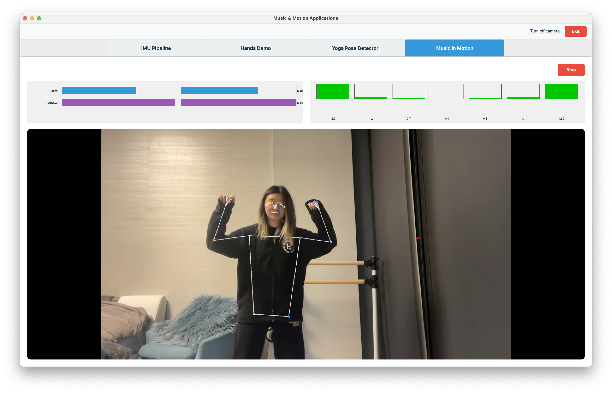
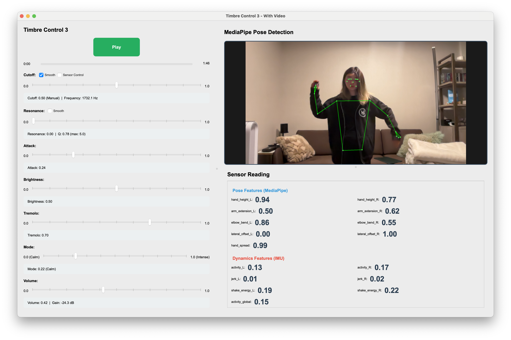
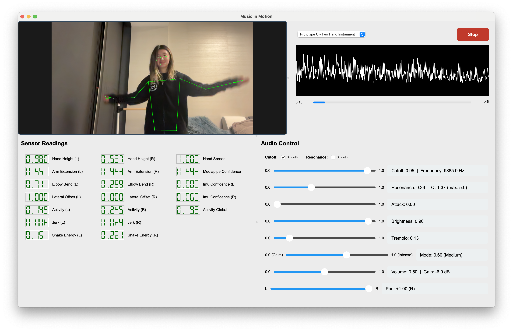

Key Learnings
IMU-Only Designs
- Sensors: Roll, Pitch, Yaw, X/Y/Z-Accel; large vs precise movements
- Control: Pitch, Timbre, Volume, Equalizer
- Achieved: Sensor → Audio pipeline
- Issues: Not immersive; better suited for hand motions, not full body
Vision-Only Designs
- L/R arm height, elbow bend
- Control: Timbre, Volume, Equalizer
- Achieved: Full-body movement → Audio pipeline

Multi-Modal Sensor

- Sensors: Roll, Pitch, Yaw, X/Y/Z-Accel; large vs precise movements
- Control: Pitch, Timbre, Volume, Equalizer
- Achieved: Sensor → Audio pipeline
Final Optimized Design

- Air DJ
- Calm vs Intense
- Two Handed Instrument
Key takeaways:
- Frequency of input (xx Hz)
- Focus on timbre, not pitch
— 6 of 7 —